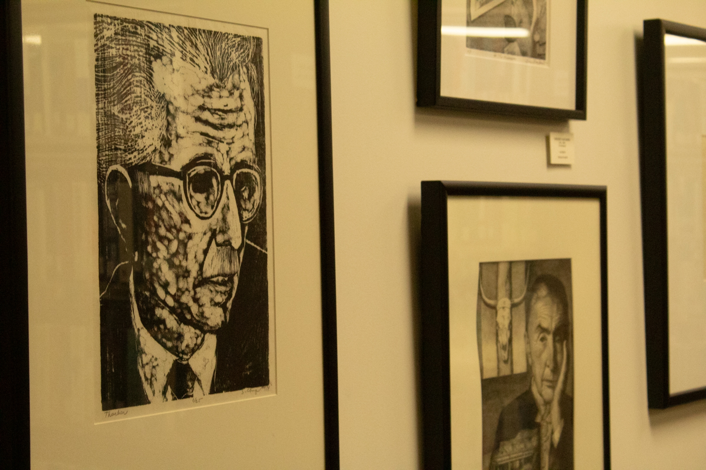

Why You Should Take Photos with Your Family

When I was younger, I didn’t like taking photos at all. I was always too shy or self-conscious to be in front of the camera. I didn’t really understand why people were so eager to take pictures. But as I grew up, I realized how important it is to capture moments with the people you love. Now, I regret not taking more photos, especially with my family, because those are memories I can never get back.
Taking pictures is a way to freeze a moment in time. You can look back years from now and remember exactly what was happening and how you felt. These memories are priceless. I started taking pictures of places I visited and of my family, and I’m really happy I did. Even if some family members don’t like taking photos, it’s still worth asking. You don’t want to miss out on preserving those moments.
Recently, I started a photography class and learned how to use a real camera. I take pictures of things that mean something to me, like a photo I took of my baby brother’s foot on an apple. It might seem simple, but it’s a moment that’s special to me. It’s a reminder that photos don’t always have to be super exciting. They just need to capture something you want to remember.
Taking photos is also a way to show your loved ones that you care. It shows them that you want to remember the time you spent together. Don’t wait until it’s too late or until you feel like it’s a “perfect” moment. Any moment can be special when you look back at it.